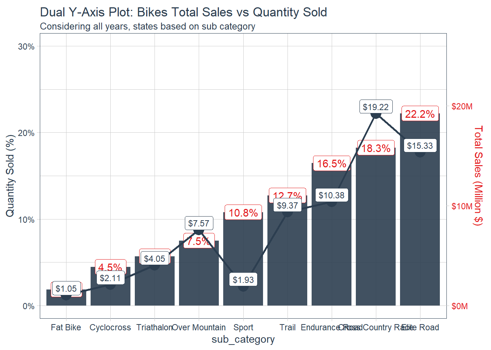

Blog
1. Steps to add R project to GitHub Repository
Steps:
- Create a GitHub Account or Login into an existing GitHub Account.
- Create a new repository,
my-project. - Open GitHub Desktop app.
- File –> Add local repository, select the project folder in your local workstation and click
Add Repositoryor - File –> Create a new repository, select
Create a new repositoryand specify the working directory to use for your r-project and clickCreate repository(you can ignoreREADMEfile initialization,.Git ignoreand.license). - Create a new r-project into specified working directory from GitHub Desktop.
- Select
File --> New project..., select Existing Directory on New Project Wizard and choose the specified working directory from GitHub Desktop to create a (NB: Note that the GitHub Desktop will show Changes.gitignoreandr-project.Rprojfiles are created.) - Publish your local repository to a GitHub repository by clicking Publish repository (you can unchecked button to keep the repository public, otherwise keep it checked if required to be private).
2. Aggregate and visualize the R way.
2.1 Loading the bike_orderlines dataset
bikes_tbl <- read_csv("./bike_orderlines.csv")%>%
mutate_if(is.character, as_factor)%>%
rename(category = category_1, sub_category = category_2)2.2 Descriptive analysis with skimr
A general overview of the data
skimr::skim_without_charts(bikes_tbl)| Name | bikes_tbl |
| Number of rows | 15644 |
| Number of columns | 13 |
| _______________________ | |
| Column type frequency: | |
| factor | 7 |
| numeric | 5 |
| POSIXct | 1 |
| ________________________ | |
| Group variables | None |
Variable type: factor
| skim_variable | n_missing | complete_rate | ordered | n_unique | top_counts |
|---|---|---|---|---|---|
| model | 0 | 1 | FALSE | 97 | Sli: 229, Sup: 227, Sca: 221, F-S: 215 |
| category | 0 | 1 | FALSE | 2 | Mou: 8051, Roa: 7593 |
| sub_category | 0 | 1 | FALSE | 9 | Eli: 3472, Cro: 2852, End: 2586, Tra: 2020 |
| frame_material | 0 | 1 | FALSE | 2 | Car: 8304, Alu: 7340 |
| bikeshop_name | 0 | 1 | FALSE | 30 | Kan: 2731, Den: 1801, Pho: 1086, Ith: 975 |
| city | 0 | 1 | FALSE | 30 | Kan: 2731, Den: 1801, Pho: 1086, Ith: 975 |
| state | 0 | 1 | FALSE | 21 | KS: 3114, CO: 1801, NY: 1303, AZ: 1086 |
Variable type: numeric
| skim_variable | n_missing | complete_rate | mean | sd | p0 | p25 | p50 | p75 | p100 |
|---|---|---|---|---|---|---|---|---|---|
| order_id | 0 | 1 | 997.95 | 569.69 | 1 | 520 | 985.5 | 1490 | 2000 |
| order_line | 0 | 1 | 8.47 | 6.82 | 1 | 3 | 7.0 | 13 | 30 |
| quantity | 0 | 1 | 1.29 | 0.88 | 1 | 1 | 1.0 | 1 | 10 |
| price | 0 | 1 | 3521.11 | 2667.19 | 415 | 1840 | 2700.0 | 4260 | 12790 |
| total_price | 0 | 1 | 4540.55 | 5190.87 | 415 | 1950 | 3200.0 | 5330 | 106600 |
Variable type: POSIXct
| skim_variable | n_missing | complete_rate | min | max | median | n_unique |
|---|---|---|---|---|---|---|
| order_date | 0 | 1 | 2011-01-07 | 2015-12-25 | 2013-08-25 | 962 |
As we can see, our dataset have:
1 datetime variable,
7 categorical variables,
5 numeric variables.
Fortunately no missing values in the data. From the factor summary, shops from Kansas city contributed to the most bike sales which is from the Kansas State. Surprisingly, shops from Ithaca city have least bike sales which is from the NY state instead of AZ state as indicated on the summary. Elite road mountain bikes with carbon material have more bike sales. Trail road bikes with aluminium have the least number of bike sales.
Add more granular time variables (month, quarter & year)
sales <- bikes_tbl %>%
mutate(month = month(order_date, abbr = FALSE,
label = TRUE,
locale = Sys.setlocale("LC_COLLATE", "C")),
quarter = quarter(order_date),
year = year(order_date))2.3 Correlation of features
sales%>%
select(-c(price, order_line, order_date, order_id))%>%
binarize()%>%
correlate(target = total_price__5330_Inf)%>%
plot_correlation_funnel(interactive = TRUE, alpha = 5)For a quick correlation analysis, we observe that bike model, frame material, quantity, category and sub category do significantly affect large sales volume.
2.4 Dual y-axis plotting
Transformer Function
3.1 Primar y-axis
Scondar Axis
